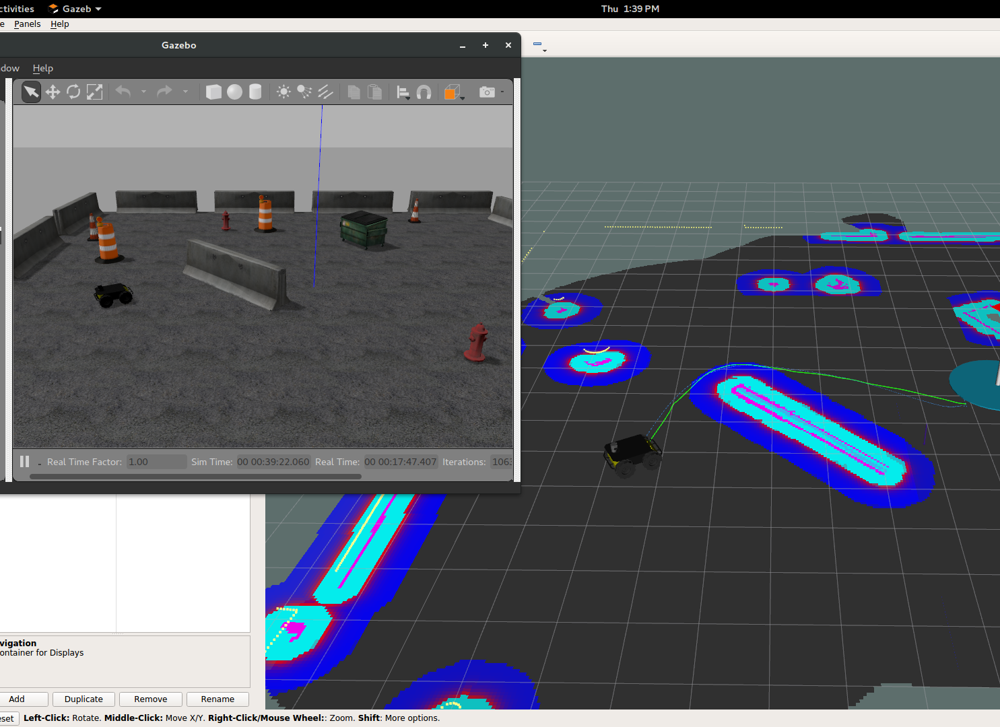

Recent Projects
Realistic Simulation of Wireless Communication in Multi-Robot Scenarios

CRLab and AIRLab Joint Project, July 2017-Present
Development of a communication node that interacts both with the ROS nodes of the robots and with
a simulator(Gazebo), in order to receive requests and uses various models of signal propagation
to decide if two robots can communicate or not. We also evaluate this node's impact on tasks like
SLAM or multi-agent exploration.
Comparing Corresponding fMRI, ECOG and EEG data in Human VTC

This research is focused on validating the correlation between corresponding ECOG, EEG and fMRI
data. The data are collected from epilepsy patients and we will design a task for showing same
active regions in the brain by Blood-oxygen-level dependent and related signals. This research is
supported by Royan institute under supervision
of Dr. Khaligh-Razavi.
Victim Detection and 3D Pose Estimation from 2D Images for a Rescue Robot

2 phase Victim Detection and 3D pose estimation system implemented for a rescue robot.
- In the first stage an Object Detection method used to detect the lying-down human bodies(victims).
- In second stage a CNN algorithm is used to find body joints information then this joints are used to reconstruct a 3D model of human
body and camera pose by applying matching pursuit algorithm in order to estimate the sparse representation of 3D pose and the relative
camera from only 2D image evidence.
This Project is going to be submmited as: M. TaherAhmadi, S. Azami, S. Shiry, ”2 Stage Victim Detection and Pose Estimation from 2D Images
for a Rescue Robot” In Intelligent Robots and Systems, IROS. IEEE/RSJ International Conference. IEEE, 2017.
Past Projects
Robocup Rescue Simulation Base Code

We all know that natural disasters and accidents take a huge toll on us and the people we love. Although we cannot prevent
these kind of accidents (Atleast not yet), we can use our tools and technology to aid us in these situations.This is our
contribution on Robot Rescue Simulation platform as a base code for starters to develop new high-level algorithms
faster and without wasting time on low-level implementation of basestructures. That’s what we are trying to achieve here
specifically by using robots. Our main goal is to develop basic modules that can later be used in a bigger framework and
interact with each other. The team description paper briefly explains these modules and the framework that we are
prototyping to optimize them with respect to the tasks in the challenge. Therefore, as discussed in the “future of robot
rescue simulation” workshop, our team has designed a new structure of ros framework and Gazebo simulation environment
that we’re going to explain its details in the following.We the ”S.O.S VR” are participating in RoboCup Rescue Virtual
Robot for the first time, yet our team has already been the winner of agent simulation league in two tournaments.